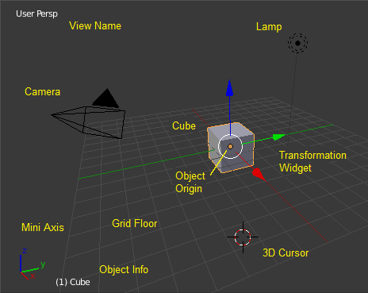
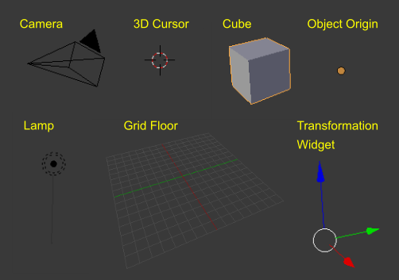

Запускова Сцена -- Startup Scene¶
After closing the splash, the startup scene is displayed in the 3D View if no other blend-file was loaded. A customized startup scene can be saved as a part of the startup file.

Запускова -- Startup сцена.
Елементи¶
- Куб -- Cube
Сірий куб у центрі цієї сцени -- це сітьовий -- mesh об'єкт. Оскільки, цей куб виділено, то він обведений оранжевий контуром.
- Початок Об'єкта -- Object Origin
- Початок -- Origin of the object показується, як оранжева точка, та він позначає (відносну) позицію куба.
- Віджет Трансформацій -- Transformation Widget
- Цей віджет -- widget складається з білого кільця та трьох кольорових (червона, зелена та синя) стрілок. Він використовується для пересування елементів (наприклад, цього куба) у сцені.
- Лампа -- Lamp
- Кільце з тонкою лінією зверху вниз -- це джерело світла, що освітлює куб. Дивіться про освітлювачі: Blender Internal, Cycles.
- Камера -- Camera
- Пірамідка з великим трикутником, що вказує уверх, -- це камера, що використовується, як точка зору для зображування, рендерингу. Дивіться про камери: Blender Internal, Cycles.
- 3D Курсор -- 3D Cursor
- The 3D cursor, a cross with a red-and-white circle, is used for placing objects in the scene.
- Сітка в Основі -- Grid Floor
- Сірі квадрати, що формують позначку основи з нульовою висотою світу. Червоні і зелені лінії -- це осі світової координатної системи. Вони перетинаються у початку, в якому також знаходиться позиція Куба -- Cube. Устави Сітки в Основі -- Grid Floor доступні на панелі «Показ» -- Display.

Елементи запускової сцени.
Перекриви -- Overlays¶
Видимість та устави перекривів можуть бути задані в Уподобаннях Користувача -- User Preferences.
- Ім'я Огляду -- View Name
- Якщо камера оглядвікна не вирівняна, то цей огляд іменується словом «Вільно» -- "User" плюс скороченою назвою перспективи («Орто» -- Ortho або «Персп» -- Persp) камери оглядвікна (українською від «вільно обрана користувачем орто (ортогональна) або персп (перспективна) проекція»).
- Частота кадрів Відтворення -- Playback FPS
- Показує на екрані частоту відтворення анімації у кадрах за секунду.
- Міні Осі -- Mini Axes
- Показу осі світової координатної системи у вигляді прямих ліній з назвами осей.
- Інфо про Об'єкт -- Object Info
- У дужках зліва спочатку показується номер поточного кадру. Далі, зліва направо, слідує ім'я активного об'єкта -- active object. Далі, при відповідних умовах, слідує виділений ключ форми -- shape key та у кутніх дужках (<>) ім'я мітки -- Мітки -- Markers на поточному кадрі. Колір перекриву «Інфо про Об'єкт» -- Object Info (лише для ключкадрів) визначається відповідно до визначених колірних устав функції Кольори Стану.